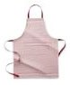
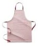

Williams-Sonoma Classic Apron, French Blue
A generously sized apron is a necessity in any kitchen, and ours will brighten yours with lively color. Sewn of thick cotten, it can be personlized or monogrammed with up to nine characters, all the same height, embriodred in your choice of color. An apron of this quality makes a welcome gift for any cook.
- Durable 100% cotten construction
- Adjustable neckband ensures a good fit
- Roomy front pockets holds small tools
- Machine Wash
$19.95
This section is expanded.
If you are seeing this, you have expanded this section.
If you are seeing this, you have expanded this section.